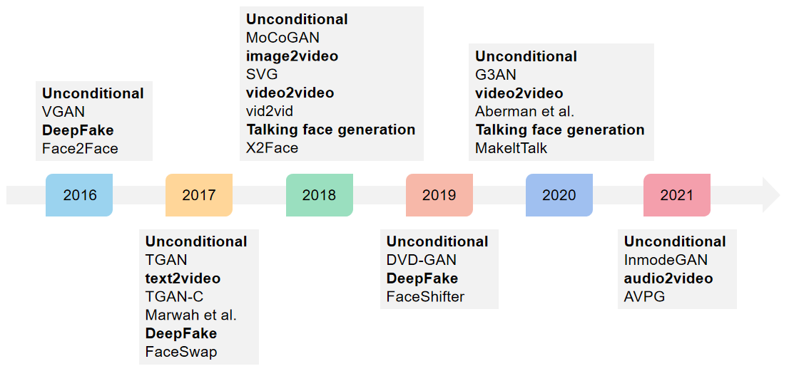
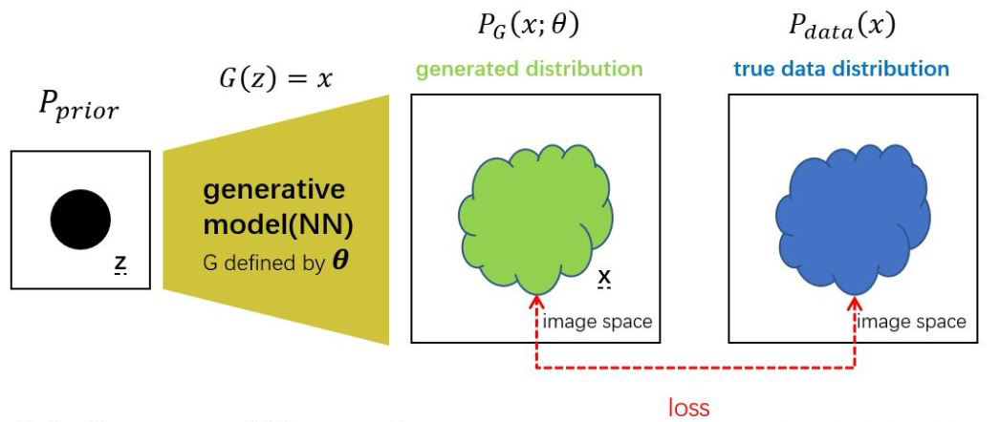
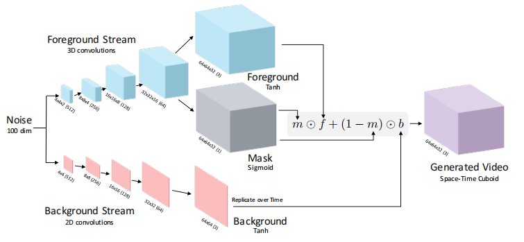
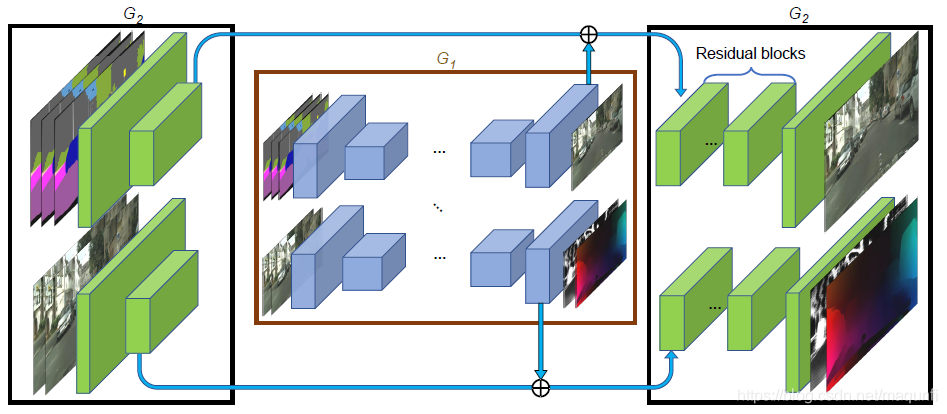
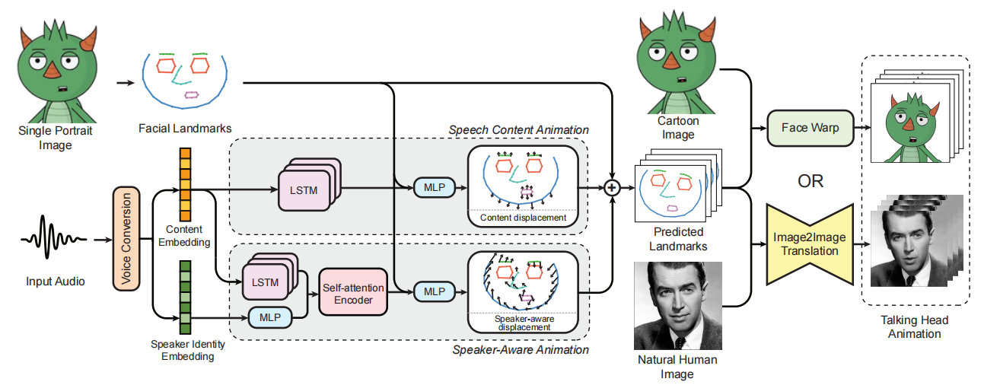

Deep Learning for Video Generation
1. Introduction
Video generation is a broad field. In general, as long as the output is a newly created video, it can be regarded as a video generation task. Video generation includes the unconditional video generation task, which generates video according to noise vector, and the conditional video generation task, which generates video according to text, image, audio, video, etc. Some video generation tasks have specific names, such as Deepfake, video resolution and talking face generation. Video generation has a wide range of applications in both scientific research and industry. The processing of video is more challenging than images or text. Therefore, video generation has always been a popular research topic, and the research on video generation is quite valuable. Some representative research related to video generation is shown in Figure 1.
Figure 1. Applications of video generation.
1.1 Unconditional video generation
Unconditional video generation refers to generating a video according to the noise vector. The noise vector can be random or the distribution of a dataset learned by the model. This is very similar to the traditional image generation task based on Generative adversarial networks (GAN) [27]. Unconditional video generation can be used for data augmentation. In deep learning, it needs a large amount of data to train a good model. Sometimes it is not easy to collect such an amount of data. Video generation technology can be used to generate data and transform data . Unconditional video generation can also be used for artistic creation. Creators can use video generation technology to generate a new video.
Although unconditional video generation is a basic task of video generation, it is still quite challenging to generate high-quality video. Unconditional video generation is based on image generation, which almost uses GAN. GAN is widely studied in the field of image generation, but there are still many problems in the field of video generation. The main reason is that the generated video is difficult to ensure consistency in frames, and is prone to jitter. Different from images, there is a dimension of time in videos. It is complicated for GAN to learn the information of both space and time. As we know, there are a generator and a discriminator in GAN. It is a common phenomenon in GAN training that the generator is too weak and the discriminator is too strong, resulting in the poor quality of generated videos no matter how long the training session is. Due to the existence of the time dimension, the calculation complexity has also greatly increased. To save computing resources, the network needs to be optimized to reduce the time complexity.
VGAN [1] is the first GAN for unconditional video generation. The principle of VGAN is similar to traditional GAN, which generates video based on noise vector. The difference is that in order to obtain the time information of videos, VGAN uses a dual stream structure, including a foreground stream and a background stream, to get two noise vectors. Although the effect of video generation is not satisfactory, as the first video generation work, VGAN is often used as baseline of unconditional video generation tasks. Different from VGAN who generates video directly from noise vectors, TGAN [2] in 2017 and MoCoGAN [3] in 2018 have adjusted the generator structure to generate video from two vectors. These two vectors correspond to the static content in space and the dynamic content in time sequence respectively. DVD-GAN [4] in 2019 brought the experience of image generation into the field of video generation and conducted large-scale training in the complex dataset dynamics-600, which is an important attempt to generate highly realistic video. Based on the idea of two vectors, G3AN [5] in 2020 models the content and motion in a separate way, and obtains good results of face video generation. The latest InmodeGAN [6] represents motion in a dictionary, and studies the interpretability of the model and the controllability of the generated video.
1.2 Text2video
Text2video means generating the corresponding video according to the semantic description. Text is one-dimensional data, while video is three-dimensional data. It is very difficult to generate large-scale data from small-scale data.
Since 2017, there has been some research on text2video [7] [8], but they can only produce good results under fixed data sets or very simple semantics. [9] in 2018 combines two generative models, variational autoencoder (VAE) [28] and GAN, to extract static and dynamic information from text to generate video. Perhaps it is very difficult to generate video for complex scenes, so there is little related work in the follow-up.
1.3 Image2video
Image2video refers to the generation of dynamic videos based on one or several static pictures. Image2video is often used for video prediction. The following frames are predicted according to the first few frames of the video. However, limited to video generation technology, the predicted video is often blurred. The longer the video is, the more obvious the problem of blur.
The 2018 SVG [10] is a classic paper in the field of video prediction. Video frames are generated by extracting samples from a priority and combining them with the deterministic estimation of future frames. [11] in 2018 also used image2video technology for video prediction. [12] in 2019 applied image2video to facial expression generation, while Imaginator [13] in 2020 proposed a new GAN to realize image2video task.
1.4 Audio2video
Audio2video is often used in the field of music technology. For example, a performance video can be generated according to pure music, a music video can be generated according to a song. Generating videos from audio alone is quite challenging. Like text2video, it is a transformation process from low-dimensional data to high-dimensional data. Video generation in the field of music technology is often a multi-modal task, which needs to integrate pictures, audio, text and so on. However, there are also some works that generate video only based on audio, such as AVPG in 2021 [14], which can synthesize videos of people playing a certain instrument guided by a given music audio clip.
1.5 Video2video
Video2video is a common task in video generation. It is also a direction that has made major progress and can be put into use in recent years. This kind of task solves the problem of how to generate target video based on a source video. Compared with the previous task, it has stronger conditions and is relatively simple. The application directions of video2video include DeepFake, video resolution, video style transfer, etc. In 2018, NVIDIA proposed a general video2video architecture [15]. Under the conditions of different kinds of source video input (such as semantic segmentation video, face video, etc.), high-definition, realistic and smooth timing results are obtained.
AI face changing, also known as Deepfake, its core principle is to "graft" the face of the target object to the imitated object by using algorithms such as GAN or CNN. Because the video is composed of continuous pictures, replacing the face in each picture is needed to get a new video of changing face. Specifically, the first step is to convert the video of the imitation object into a large number of pictures frame by frame, and the next step is to replace the original face with the target face. Finally, the replaced images are recombined into fake videos. Deep learning technology can automate this process. It is worth mentioning that Deepfake has developed rapidly since it was proposed in 2016 [34], the model Face2Face has raised high attention. Then FaceSwap [29] in 2017 and Faceshifter [16] in 2019 have been able to generate quite confusing fake faces. There are few technical challenges for Deepfake at present, but this technology has brought a series of ethical, moral and legal problems. As a result, Deepfake detection technology has gradually developed. As the video generated by Deepfake is quite confusing, detection technology is facing major challenges. Many videos can confuse the detector and be classified as true faces.
Video generation technology can be applied to video resolution. Video resolution refers to inputting a low-resolution video and outputting a high-resolution video. Some videos recorded at an early age have low resolution, and some videos have been artificially damaged. Under that circumstance, video resolution technology needs to be used to improve video resolution and to a clear video. Video restoration can also be used in online conferences. In order to save the network bandwidth, the video needs to be compressed when transferring. At the receiving end, the video resolution technology can be used to recover the high-resolution video and realize decompression.
Video style transfer refers to the generation of videos from one domain to another. For example, add different styles of filters to the video, convert the video into cartoons, or change some characteristics of the characters in the video, such as adding glasses to the characters, changing the gender, hair color, age and so on. Style transfer originates from images. Some image style transfer methods can be directly used in videos. Decompose the video into frames, migrate the image style for each frame, and finally synthesize the video. However, there is a lack of consistency in terms of time in the generated videos. 2017 [17] [18] proposed style transfer methods for videos, which can realize real-time style transfer of video and maintain the similarity between consecutive frames. With the continuous development of video style transfer, there has been a lot of related work in 2020. [19] Is a method that can convert video into animation, [20] uses optical flow to generate video, [21] can realize video style transfer of different styles.
1.6 Talking face generation
Talking face generation is to generate a video of a speaker according to an input face picture and a speech audio. This is a multimodal generation task. Speaking face generation can be applied in virtual reality, video games, film production, video encoding and decoding and other fields. Different from Deepfake, there is no source video for talking face generation, a completely new video needs to be generated according to just picture and audio. Therefore, talking face generation is more difficult has become a popular research topic in recent years. Nowadays, talking face generation technology still has great limitations, such as the generated face expression and the posture are single, and the head movement is not natural enough.
X2face [22] in 2018 is the first paper on talking face generation. Because the audio and video variables are separated in X2face, the adversarial training strategy is not used, the amount of motion and head rotation that the model can processed are limited, and the generated video lacks high-frequency details. [23] [24] improved this technology, and the confrontational training strategy is adopted. Driven by face marker points, it can generate better talking face video. [25] is based on face marker points and introduces spatial attention mechanism, facial animation matching with speech is generated. However, [25] focused on the lips, and the identity information of the speaker was ignored. In 2020, MakeltTalk [26] was born and achieved good results. It separates the audio content from the speaker identity, and captures the face markers independently and dynamically. MakeltTalk can process not only human faces, but also cartoon avatars to generate speaker videos with head movements, making the overall effect more natural.
2. Technologies
2.1 GANs
Generative adversarial network (GAN) was proposed by Goodfellow [27] in 2014 and is widely used in generative tasks in computer vision. GAN was designed for image generation and some modified GANs have been proposed to solve video generative tasks.
The core idea of GAN is the game between generator G and discriminator D. The generator generates images through input. The discriminator is a binary classification network that takes the image generated by the generator as negative samples and the real image as positive samples.
Generator. The principle of generator is shown in Figure 2. A simple prior distribution Pprior (such as Gaussian distribution) is selected, sample z from the prior distribution is input to the neural network G to obtain the generated image x. In this way, the generation distribution PG(x;θ) is constructed.
Figure 2. Principle of generators.
Our goal is to let PG as close to the real distribution Pdata as possible. Similar to maximum likelihood estimation, θ of generator G is improved by designing loss function to compare distance between generated samples and real samples.
$$P_G(x;\theta)=\int_{z}P_{prior}(z)I_{[G(z;\theta)=x]}dz$$
The indicator function I indicates that the value is 1 when the condition G(z;θ)=x is true and 0 when it is false.
Obviously the computation of PG is complex, it is impossible to use simple maximum likelihood estimation. The discriminator can be used to solve this problem.
Discriminator. Discriminator is used to evaluate the difference between PG and Pdata, it is a binary classification network. So the goal of GAN is to find a generator that can minimize the difference between real data and generated data:
$$G^*= \mathop{\arg\min\limits_G\max\limits_D}V(G,D)$$
where max V(G,D) represents the difference between real data and generated data. An optimal discriminator is got when fixing a generator:
$$D^*=\arg\max\limits_{D}V(G,D)$$
where
$$V(G,D)=E_{x\sim P_{data}}\log{D(x)}+E_{x\sim P_G}\log{(1-D(x))}$$
The training of generator and discriminator is carried out alternately. When fixing generator, an optimal discriminator is trained, then it is used to improve the performance of current generator.
2.1.1 VGAN
VGAN [1] is a classic paper on generation task, which proposes the first video generation model. Video usually consists of static background and dynamic foreground. Based on this common sense, the paper designs a two-stream generation model to generate static background and foreground dynamic foreground respectively, and combines the two to get the final video, as shown in Figure 3.

Figure 3. Streams of generation of VGAN.
In order to generate background and foreground respectively, the author proposes a new two-stream generator. The input is a noise vector with 100 dimensions, then the 3D transposed convolution network is used to generate the foreground, the 2D transposed convolution network is used to generate the background, and the mask is used to construct an explicit expression for the optimization of the network. The structure of the generator is shown in Figure 4.
Figure 4. Generator of VGAN.
Foreground stream. The foreground generation uses 3D transposed convolution network, because 3D transpose convolution network can ensure the consistency of space and time when generating video. The size of the 3D transpose convolution kernel used by the foreground stream is 4*4*4, except that the size of the first layer is 2*4*4. The step size is 2. It is considered in the paper that this size of convolution kernel can well balance the training speed and the quality of generated video.
Background stream. It is assumed that the background in the generated video is static. The model directly uses a 2D transposed convolution network to generate the background from the noise. The structure of the 2D transpose convolution network draws lessons from the basic structure of DCGAN [30].
Mask fusion of foreground and background. This paper uses a mask method to fuse the dynamic foreground and static background of videos. As shown in Figure 4, in the penultimate layer of the foreground stream, the network forks. One way uses the 3D transposed convolution layer to generate video frames, and the other way uses the 3D transposed convolution layer to generate masks. Their sizes are the same, and the first part of their network is shared by parameters. Then, the paper uses an explicit expression to constrain the network:
$$G_2(z)=m(z)\odot f(z)+(1-m(z))\odot b(z)$$
where m(z) represents the generated mask (sigmoid is used to constrain the numerical range of 0-1), f(z) represents the generated foreground video, and b(z) represents the generated background image. The size of the final network generated video is 32*64*64.
Discriminator. The discriminator in this paper is a 3D convolutional neural network. The discriminator contains five convolution layers, and the size of each convolutional kernel is 4*4*4. This structure is reverse of the foreground stream in the generator. Through this way it can classify realistic scenes and generated scenes and recognize motion between frames.
2.1.2 MoCoGAN
MoCoGAN [3] is an unconditional video generation network proposed by NVIDIA in CVPR2018. Compared with the previous video generation models such as VGAN [1] and TGAN [2], this paper divides the input into two parts, the content vector controls video content and the motion vector controls the action. There are two discriminators in MoCoGAN, one to identify the reality of each frame image and the other to identify the reality of the whole video.
The structure of MoCoGAN is shown in Figure 5, which includes four sub-networks: an RNN network RM, an image generator GI, an image discriminator DI and a video discriminator DV.

Figure 5. Structure of MoCoGAN.
The change of action in the generated video is determined by RNN network. RM needs to learn a series of motion vectors from the input noise. Then the image generator GI generates a single frame in the video by mapping a vector to an image. With the motion vectors learned by RM, GI can generate a sequence of continual images.
DI and DV provide key feedback for GI and RM. The object identified by the image discriminator DI is a single frame. DI is trained to judge whether a frame is from a real video clip or not. The object identified by the video discriminator DV is a video clip. DV intercepts a specific length of video and determines whether it is sampled from a real video. DI is based on a single-in-single-out vanilla CNN, while DV is based on spatio-temporal CNN.
It is possible to use only DV to evaluate GI and RM, but the introduction of image discriminator DI can get better results. This is because DV can only identify dynamic features, while DI can identify static features, which plays a good complementary role.
2.1.3 vid2vid
Vid2vid [15] is a video translation model proposed by NVIDIA. Unlike VGAN and MoCoGAN mentioned above, vid2vid solves the problem of conditional video generation and completes the conversion of video between two domains.
Vid2vid is an improvement based on pix2pix [31] and pix2pixHD [32]. The pix2pix framework proposed a concise framework based on conditional GAN (CGAN) [33] to solve the problem of image translation. Pix2pixHD improves the generator and discriminator of pix2pix and can generate high-resolution images. Vid2vid adds optical flow constraints to pix2pixHD to generate coherent and high-quality video.
Optical flow constraints. Optical flow information is calculated by a trained CNN. Vid2vid adds optical flow constraint on the generator of pix2pix and optical flow information on the discriminator. The idea of Coarse-to-fine of pix2pixHD is considered in vid2vid. There are two generators in vid2vid, one to generate high-resolution image and the other to generate low-resolution image. Two different discriminators are designed according to static image and dynamic video. As shown in Figure 6, the generator is divided into two sub networks G1 and G2. G1 is used for global perception and G2 is used for local enhancement. The input and output of G1 are with low resolution, and the input and output of G2 are with high resolution.
Figure 6. Coarse-to-fine.
The foreground and background are modeled respectively. Taking the task of converting semantic map into street view map as an example, there is a great difference between foreground and background. The background such as road is usually immobile, so the optical flow calculation is accurate and the image is clear, while the optical flow calculation of foreground is more difficult. Therefore, a mask is set to control the transparency of the foreground and background.
2.2 MakeltTalk
MakeltTalk, proposed in 2020, is a model for talking face generation. The input is a photo and an audio, and the output is a video of the speaker, including correct mouth shape changes and head shaking. MakeltTalk separates the content of the input audio signal from the speaker identity. The audio content effectively controls the movement of lips and nearby facial areas, while the speaker identity determines the details of facial expression and other head movements. Another key component of this method is to predict the speaker's facial landmarks. Based on this representation, MakeltTalk can process not only human faces, but also many portrait images, including art paintings, cartoon characters and Japanese comics.
MakeltTalk uses an encoder based on LSTM to extract the content embedding, which can compress the input audio into a compact representation (bottleneck). After training, it can give up the original speaker identity but retain the content. Corresponding lip actions can be generated according to the content. A speaker verification model is used to extract the speaker identity embedding, which maximizes the embedding similarity between different speeches of the same speaker and minimizes the similarity between different speakers.
The last step of the model is to generate the final video for the input image. MakletTalk uses different algorithms for cartoon images and ordinary faces. For ordinary face photos, the goal is to generate video frames according to the given face and the predicted motion curve of facial landmarks. MakeltTalk is inspired by the idea of using a trained network to convert landmarks into images. MakeltTalk processes moving facial landmarks and portraits based on UNET architecture.
Figure 7. Structure of MakeltTalk.
3. Ethical issues
With the development of deep learning technology, the effect of video generation is getting better and better, and video generation is used more frequently. However, the technology of video generation still has its limitations. It also brings some legal issues and privacy issues, leading to a series of ethical discussions.
3.1 Algorithm issues
Algorithm fairness. As we know, training a generative model requires a lot of data. The resulting video will also be similar to the content of the dataset. However, there are often biases in the collection of data sets, which leads to biased generation models. This problem is more obvious when it comes to race, gender and other human related attributes. Taking unconditional video generation as an example, a Chinese scientist may collect many domestic data when doing research. A large proportion of these data, even say that all of them are yellow races. As a result, most of the generated faces are yellow people, lacking the generation results of other races. Such an algorithm is not comprehensive enough. This problem also exists in multimodal tasks. Because the data set for training AI may only have one language, the generated model can only recognize text and audio according to the single language.
Ideally, the performance of the algorithm should be consistent in different clusters. For the generation algorithm, one solution is to build a large and complete data set for training. This data set should be diverse, including various categories of data, and each category should be similar in number. However, it is difficult to build a huge data set, which requires a lot of human effort.
Responsible person of the algorithm. With the development of video generation technology, algorithms have been widely used for creation. Talking face generation can be used to make virtual idols, virtual singers, etc. These virtual persons have the ability to speak and perform independently. So who should be responsible for the improper behavior of the virtual person? Is it the agency of the virtual idol, or the team that invented this talking generation technology? The responsibility attribution of AI technology and AI products is a topic that should be discussed.
3.2 Legal issues
Deepfake technology is now mature, and the generated video is lifelike, even relatives and friends are difficult to distinguish. Criminals may use this technology to commit crimes, triggering a series of legal issues.
Portrait right and reputation right. Deepfake technology can freely synthesize other people's faces in videos. If my face of my photo is changed without my consent, my portrait right will be violated. For example, does a person have the right to portrait his dead relatives? Deepfake may also be used against the right of portrait. According to laws and regulations, as long as the synthesized video negative evaluations of the original person, it is suspected to have infringed upon others' reputation rights.
So we have to mention the origin of Deepfake. A netizen with ID deepfakes shared a small video of star face changing made by AI technology on Reddit. Due to the realistic effect, "deepfakes" technology has also been applied in some adult videos. Tens of thousands of celebrity pornographic films quickly flooded Reddit, and finally even the social network twitter was occupied. Many female stars, including Scarlett Johansson and Gal Gadot, have "appeared" in many pornographic films. Subsequently, faced with multiple pressures such as legal and public relations, Reddit and other websites successively removed all Deepfake videos and announced that similar videos would not be uploaded since then. Reddit also blocked the account of "deepfakes", at the same time, deepfakes directly opened the code of its AI face changing project. This technology immediately became popular all over the world. In order to commemorate "deepfakes", people named AI face changing technology with its ID.
Those involving infringement are not limited to adult videos. Any video that synthesizes the face of others in a video that may lead to the reduction of others' social evaluation may constitute infringement. For example, in June 2019, a synthesized video of Facebook CEO Mark Zuckerberg circulated on the Internet. In the video, Zuckerberg's mouth and voice are manipulated, and he is discussing Facebook's influence in a negative tone. The title of this video is that Facebook will "improve advertising transparency", but Zuckerberg's voice, which has been tampered with, says: "One man with total control of billions of people’s stolen data, all their secrets, their lives, their futures." Affected by such events, Facebook has updated relevant policies, and any content that is identified as false or misleading will be automatically deleted.
In order to solve similar problems, academia, government agencies and some start-ups have started to launch their own video verification technologies to fight against the threat of Deepfake videos by automatically adding time and location information when you take photos or videos. For example, the startup Truepic is working with Qualcomm to add its technology to mobile phone hardware components. This technology will automatically mark data such as time and location when taking photos and videos for future verification. Truepic also offers a free app that consumers can use to take verified photos on their smartphones. Many Deepfake detection technologies have been developed based on deep learning classification models.
Property safety and personal safety. With the gradual popularization of payment with face recognition, Deepfake may also have an impact on payment security. A criminal may find a self portrait of a person on the Internet. Through simple image processing and dynamic synthesis technology, the network face is synthesized into a prepared video. The face of the original video is covered, and some software that uses face recognition as authentication information can be fooled. In order to deal with this problem, the current payment method is usually supported by a number of live detection technologies in addition to face recognition. Some criminals may also use photos of the victims to synthesize videos and extort money from the families of the victims.
3.3 Social issues
Privacy protection. Nowadays, it is very common to share daily life on the Internet. Through the Internet, it is easy to get personal information. As mentioned above, when my pictures or videos are uploaded to the Internet, they may be used by criminals, resulting in violations of the right to portrait, reputation, and even property and personal safety.
Training a video generation network requires a lot of data, which are not only recorded in the laboratory, but also collected from the network. In many cases, the faces in the data are used unconsciously, and some data sets are built without permission. For example, if you find that a generated face looks like yourself, it is likely that your image has been included in the data set without your awareness. To solve this problem, the EU has proposed a privacy protection protocol to protect the data security of users. Enterprises must obtain the consent of users when using their data, and users have the right to know where their data are used. When users do not want their data to be used, they also have the right to withdraw. This greatly protects the privacy of users. Some public datasets in the academic community will also require the signing of a privacy agreement before use, requiring users of the dataset not to conduct second transmission, not to conduct business, and so on.
Information authenticity. As videos record the complete dynamic changes of people or objects, it is considered to feature higher credibility than pictures and are often used as reliable and real media sources or legal evidences. However, Deepfake and talking face generation damage the authenticity of the information, which make it more difficult for people to obtain real information. Video generation raises challenges of screening information sources and judging evidence. Ian Goodfellow, a Google engineer who invented GAN, warned people of the serious consequences of a large number of fake videos: "We have always relied on videos as evidence of facts. Now it seems that this is just a historical luck." If the public is not familiar with the original content before Deepfake, it is easy to recognize the false content as true, resulting in the spread of rumors, misunderstanding and intensified conflicts. Florida Senator Marco Rubio also warned of the dangers of this technology. He said that so far, Deepfake is mainly used to produce humorous videos of famous people, but some people may try to use them to interfere in the US election, tamper with the truth and spread false news. Therefore, during the production and dissemination of generated videos, the public's right to understand the technical operation made by the video producer and the specific situation of the content before and after video generation should be ensured.
4. Conclusion
This article is about the field of video generation. Firstly, applications, challenges and related papers in each sub field of video generation are introduced. Video generation includes unconditional video generation and conditional video generation. Conditional video generation includes generating video according to one or more of pictures, text, audio and video. Video2video is a popular field, including video restoration, AI face changing, video style transfer and so on. Talking face generation generates video based on audio and pictures, which is an advanced research direction at present and has a wide range of application scenarios.
Then this article focuses on four video generation networks, among which VGAN, MoCoGAN and vid2vid are all based on generation adversarial network (GAN), which is an important and widely implemented network in video generation field. VGAN and MoCoGAN are for unconditional generation, while vid2vid is for the conditional generation task of video2video. MakeltTalk is a network for talking face generation, which is based on a structure of encoder and decoder with attention mechanism.
The rapid development of video generation has also brought a series of discussions on AI ethics. AI algorithms may be biased, and sometimes the algorithms are not stable enough. Who will bear the responsibility when problems arise is still an unsolved problem. Video generation, especially Deepfake, also brings some legal problems. Improper use of technology may infringe others' portrait right, reputation right, property safety, personal safety, etc. The field of video generation has also caused some social problems, such as the protection of users' privacy and the question of the authenticity of information. Some measures have been taken to solve these problems, such as Deepfake detection technology and introducing relevant laws and policies. However, the problem of AI ethics is not easy to solve and is still under intense discussion.
References
[1]Vondrick, Carl, Hamed Pirsiavash, and Antonio Torralba. "Generating videos with scene dynamics." Advances in neural information processing systems 29 (2016).
[2]Saito, Masaki, Eiichi Matsumoto, and Shunta Saito. "Temporal generative adversarial nets with singular value clipping." In Proceedings of the IEEE international conference on computer vision, pp. 2830-2839. 2017.
[3]Tulyakov, Sergey, Ming-Yu Liu, Xiaodong Yang, and Jan Kautz. "Mocogan: Decomposing motion and content for video generation." In Proceedings of the IEEE conference on computer vision and pattern recognition, pp. 1526-1535. 2018.
[4]Clark, Aidan, Jeff Donahue, and Karen Simonyan. "Efficient video generation on complex datasets." (2019).
[5]Wang, Yaohui, Piotr Bilinski, Francois Bremond, and Antitza Dantcheva. "G3AN: Disentangling appearance and motion for video generation." In Proceedings of the IEEE/CVF Conference on Computer Vision and Pattern Recognition, pp. 5264-5273. 2020.
[6]Wang, Yaohui, Francois Bremond, and Antitza Dantcheva. "Inmodegan: Interpretable motion decomposition generative adversarial network for video generation." arXiv preprint arXiv:2101.03049 (2021).
[7]Marwah, Tanya, Gaurav Mittal, and Vineeth N. Balasubramanian. "Attentive semantic video generation using captions." In Proceedings of the IEEE international conference on computer vision, pp. 1426-1434. 2017.
[8]Pan, Yingwei, Zhaofan Qiu, Ting Yao, Houqiang Li, and Tao Mei. "To create what you tell: Generating videos from captions." In Proceedings of the 25th ACM international conference on Multimedia, pp. 1789-1798. 2017.
[9]Li, Yitong, Martin Min, Dinghan Shen, David Carlson, and Lawrence Carin. "Video generation from text." In Proceedings of the AAAI Conference on Artificial Intelligence, vol. 32, no. 1. 2018.
[10]Denton, Emily, and Rob Fergus. "Stochastic video generation with a learned prior." In International conference on machine learning, pp. 1174-1183. PMLR, 2018.
[11]Zhao, Long, Xi Peng, Yu Tian, Mubbasir Kapadia, and Dimitris Metaxas. "Learning to forecast and refine residual motion for image-to-video generation." In Proceedings of the European conference on computer vision (ECCV), pp. 387-403. 2018.
[12]Fan, Lijie, Wenbing Huang, Chuang Gan, Junzhou Huang, and Boqing Gong. "Controllable image-to-video translation: A case study on facial expression generation." In Proceedings of the AAAI Conference on Artificial Intelligence, vol. 33, no. 01, pp. 3510-3517. 2019.
[13]Wang, Yaohui, Piotr Bilinski, Francois Bremond, and Antitza Dantcheva. "Imaginator: Conditional spatio-temporal gan for video generation." In Proceedings of the IEEE/CVF Winter Conference on Applications of Computer Vision, pp. 1160-1169. 2020.
[14]Zhu, Hao, Yi Li, Feixia Zhu, Aihua Zheng, and Ran He. "Let's Play Music: Audio-Driven Performance Video Generation." In 2020 25th International Conference on Pattern Recognition (ICPR), pp. 3574-3581. IEEE, 2021.
[15]Wang, Ting-Chun, Ming-Yu Liu, Jun-Yan Zhu, Guilin Liu, Andrew Tao, Jan Kautz, and Bryan Catanzaro. "Video-to-video synthesis." arXiv preprint arXiv:1808.06601 (2018).
[16]Li, Lingzhi, Jianmin Bao, Hao Yang, Dong Chen, and Fang Wen. "Faceshifter: Towards high fidelity and occlusion aware face swapping." arXiv preprint arXiv:1912.13457 (2019).
[17]Chen, Dongdong, Jing Liao, Lu Yuan, Nenghai Yu, and Gang Hua. "Coherent online video style transfer." In Proceedings of the IEEE International Conference on Computer Vision, pp. 1105-1114. 2017.
[18]Huang, Haozhi, Hao Wang, Wenhan Luo, Lin Ma, Wenhao Jiang, Xiaolong Zhu, Zhifeng Li, and Wei Liu. "Real-time neural style transfer for videos." In Proceedings of the IEEE Conference on Computer Vision and Pattern Recognition, pp. 783-791. 2017.
[19]Aberman, Kfir, Yijia Weng, Dani Lischinski, Daniel Cohen-Or, and Baoquan Chen. "Unpaired motion style transfer from video to animation." ACM Transactions on Graphics (TOG) 39, no. 4 (2020): 64-1.
[20]Chen, Xinghao, Yiman Zhang, Yunhe Wang, Han Shu, Chunjing Xu, and Chang Xu. "Optical flow distillation: Towards efficient and stable video style transfer." In European Conference on Computer Vision, pp. 614-630. Springer, Cham, 2020.
[21]Gao, Wei, Yijun Li, Yihang Yin, and Ming-Hsuan Yang. "Fast video multi-style transfer." In Proceedings of the IEEE/CVF Winter Conference on Applications of Computer Vision, pp. 3222-3230. 2020.
[22]Wiles, Olivia, A. Koepke, and Andrew Zisserman. "X2face: A network for controlling face generation using images, audio, and pose codes." In Proceedings of the European conference on computer vision (ECCV), pp. 670-686. 2018.
[23]Songsri-in, Kritaphat, and Stefanos Zafeiriou. "Face video generation from a single image and landmarks." In 2020 15th IEEE International Conference on Automatic Face and Gesture Recognition (FG 2020), pp. 69-76. IEEE, 2020.
[24]Zakharov, Egor, Aliaksandra Shysheya, Egor Burkov, and Victor Lempitsky. "Few-shot adversarial learning of realistic neural talking head models." In Proceedings of the IEEE/CVF international conference on computer vision, pp. 9459-9468. 2019.
[25]Chen, Lele, Ross K. Maddox, Zhiyao Duan, and Chenliang Xu. "Hierarchical cross-modal talking face generation with dynamic pixel-wise loss." In Proceedings of the IEEE/CVF Conference on Computer Vision and Pattern Recognition, pp. 7832-7841. 2019.
[26]Zhou, Yang, Xintong Han, Eli Shechtman, Jose Echevarria, Evangelos Kalogerakis, and Dingzeyu Li. "Makelttalk: speaker-aware talking-head animation." ACM Transactions on Graphics (TOG) 39, no. 6 (2020): 1-15.
[27]Goodfellow, Ian, Jean Pouget-Abadie, Mehdi Mirza, Bing Xu, David Warde-Farley, Sherjil Ozair, Aaron Courville, and Yoshua Bengio. "Generative adversarial nets." Advances in neural information processing systems 27 (2014).
[28]An, Jinwon, and Sungzoon Cho. "Variational autoencoder based anomaly detection using reconstruction probability." Special Lecture on IE 2, no. 1 (2015): 1-18.
[29]Korshunova, Iryna, Wenzhe Shi, Joni Dambre, and Lucas Theis. "Fast face-swap using convolutional neural networks." In Proceedings of the IEEE international conference on computer vision, pp. 3677-3685. 2017.
[30]Radford, Alec, Luke Metz, and Soumith Chintala. "Unsupervised representation learning with deep convolutional generative adversarial networks." arXiv preprint arXiv:1511.06434 (2015).
[31]Isola, Phillip, Jun-Yan Zhu, Tinghui Zhou, and Alexei A. Efros. "Image-to-image translation with conditional adversarial networks." In Proceedings of the IEEE conference on computer vision and pattern recognition, pp. 1125-1134. 2017.
[32]Wang, Ting-Chun, Ming-Yu Liu, Jun-Yan Zhu, Andrew Tao, Jan Kautz, and Bryan Catanzaro. "High-resolution image synthesis and semantic manipulation with conditional gans." In Proceedings of the IEEE conference on computer vision and pattern recognition, pp. 8798-8807. 2018.
[33]Mirza, Mehdi, and Simon Osindero. "Conditional generative adversarial nets." arXiv preprint arXiv:1411.1784 (2014).
[34]Thies, Justus, Michael Zollhofer, Marc Stamminger, Christian Theobalt, and Matthias Nießner. "Face2face: Real-time face capture and reenactment of rgb videos." In Proceedings of the IEEE conference on computer vision and pattern recognition, pp. 2387-2395. 2016.